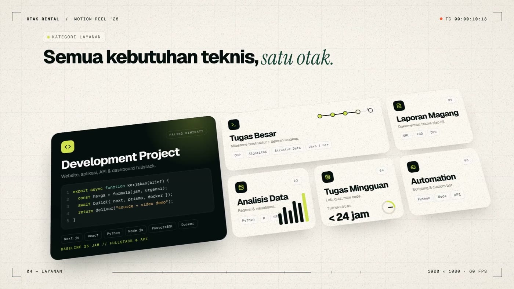
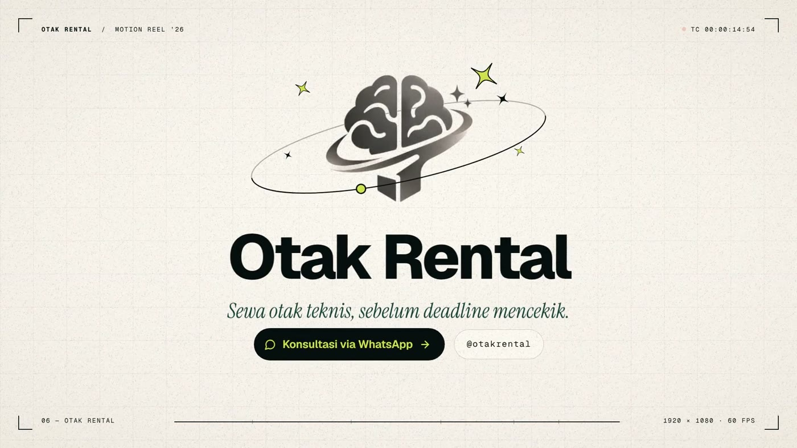
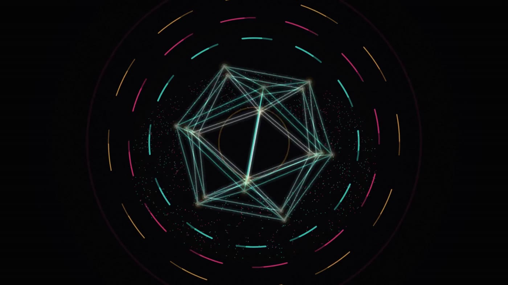
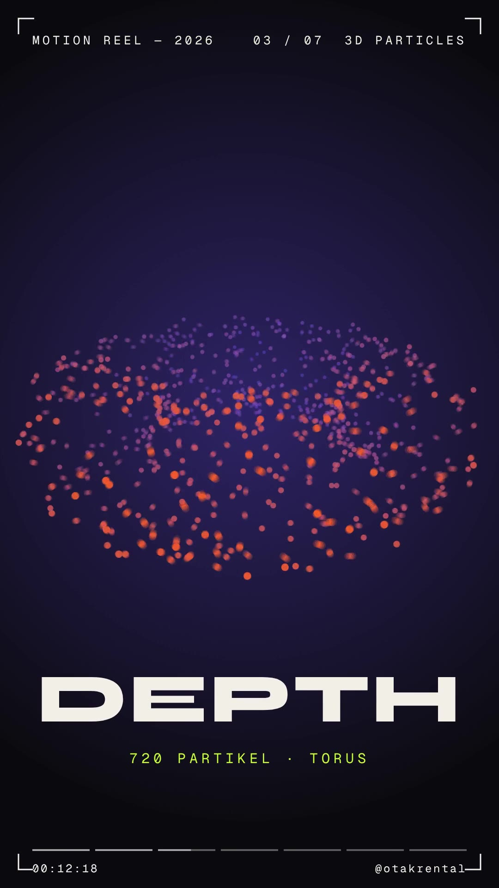
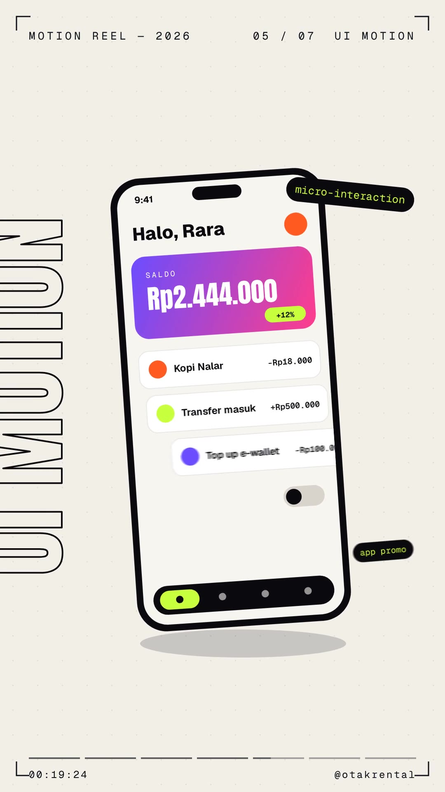

Bikin video motion graphic keren pakai AI (Claude): dari ide, prompt, sampai jadi file MP4 siap upload.
24 halaman3 praktik langsung20 prompt siap pakai

SEMUA VIDEO
dibuat
PAKAI AI
otakrental · @otakrentalMotion Tanpa After Effects
OTAK RENTAL / MOTION TANPA AFTER EFFECTSPEMBUKA
Halo, kreator
Kamu gak perlu jago softwarebuat bikin video yang gerak.
Selama ini motion graphic identik dengan After Effects: mahal, berat, dan butuh berbulan-bulan belajar. Di modul ini kamu belajar cara yang beda: kamu yang jadi sutradara, AI yang jadi animatornya.
Kamu cukup menjelaskan ide lewat chat: warna, teks, gerakan, durasi. AI akan menulis "resep animasi" berupa kode HTML yang bisa langsung diputar di browser. Setelah itu tinggal kamu rekam jadi video. Kamu tidak perlu mengerti kodenya, sama seperti kamu tidak perlu jadi koki untuk memesan makanan.
Yang kamu dapat dari modul ini
1 · Cara berpikir motion
Dasar timing, easing, dan 6 jurus gerakan yang bikin animasi terasa "mahal".
2 · Rumus prompt O.T.A.K
Template prompt 4 bagian biar AI langsung paham maumu, tanpa bolak-balik.
3 · Tiga praktik langsung
Logo reveal, teks kinetik untuk Reels, dan video promo produk 15 detik.
4 · Dari browser ke MP4
Cara merekam jadi video di Windows, Mac, HP, dan OBS, plus tambah musik.
5 · 20 prompt siap pakai
Counter angka, chat bubble, grafik, glitch, intro YouTube, dan lainnya.
6 · Ubah jadi cuan
Ide paket jasa, acuan harga, dan cara bangun portofolio pertamamu.
JUJUR DULUAI itu alat bantu, bukan tombol ajaib. Hasil pertama jarang langsung sempurna. Yang membedakan hasil biasa dan keren adalah cara kamu mengarahkan dan merevisi, dan itu yang diajarkan di sini.
02@otakrental
OTAK RENTAL / MOTION TANPA AFTER EFFECTSDAFTAR ISI
Daftar isi
Peta perjalanankamu.
Bab
Materi
Hal.
01
Cara kerjanya: AI menulis, browser memutar, kamu merekam
04
02
Persiapan: 4 alat, semuanya bisa gratis
05
03
Dasar motion 10 menit: timing, easing, 6 jurus gerakan
06
04
Rumus prompt O.T.A.K: template yang bikin AI langsung paham
08
05
Praktik 1: Logo reveal 5 detik
10
06
Praktik 2: Teks kinetik untuk Reels (9:16)
12
07
Praktik 3: Video promo produk 15 detik
13
08
Revisi seperti sutradara + tabel troubleshooting
15
09
Dari browser ke MP4: rekam, potong, tambah musik
17
10
Level pro: render otomatis frame-per-frame
19
11
Ubah jadi cuan: paket jasa, harga, portofolio
20
★
Bonus: 20 prompt siap pakai
21
★
Galeri: hasil nyata dengan metode ini
23
★
Checklist akhir + penutup
24
SARANBaca Bab 1–4 berurutan dulu (±30 menit). Setelah itu langsung praktik. Motion itu skill tangan: makin sering dicoba, makin cepat jadi.
03@otakrental
OTAK RENTAL / MOTION TANPA AFTER EFFECTSBAB 01 · CARA KERJANYA
01
Bab 01
Cara kerjanya:4 langkah sederhana.
Browser seperti Chrome ternyata bisa jadi "mesin animasi". Website modern penuh gerakan, dan semua gerakan itu ditulis dengan kode. Nah, AI jago sekali menulis kode itu.
"Tapi aku gak ngerti kode…"
Tenang. Anggap kode HTML itu resep. Kamu yang menentukan rasa ("lebih manis", "kurang pedas"), AI yang menakar bumbunya. Kamu cukup menilai hasilnya di layar, bukan membaca resepnya baris per baris.
Kenapa cara ini enak
Gratis sampai murah, tanpa software berat
Jalan di laptop biasa, bahkan bisa lewat HP
Revisi cukup pakai kalimat
Hasil tajam: teks dan bentuk dihitung, bukan gambar yang di-zoom
Batasannya (biar realistis)
Cocok untuk grafis, teks, ikon, dan UI, bukan untuk mengedit footage kamera
Ilustrasi yang sangat detail tetap butuh gambar dari luar
Butuh 2–5 kali revisi untuk hasil yang pas
FAKTASemua video di galeri modul ini (hal. 23) dibuat dengan alur yang sama: AI menulis HTML, lalu hasilnya dijadikan video.
04@otakrental
OTAK RENTAL / MOTION TANPA AFTER EFFECTSBAB 02 · PERSIAPAN
02
Bab 02
Persiapan:cukup 4 alat.
Semua alat di bawah punya versi gratis. Siapkan dulu sebelum masuk ke praktik supaya alurmu tidak terputus.
01 · Otak
Akun Claude
Daftar di claude.ai (web) atau pakai aplikasinya. Di sinilah kamu menulis prompt dan melihat pratinjau animasi. Fitur dan batas pemakaian tiap paket bisa berubah, jadi cek halaman paket di situsnya.
02 · Layar
Browser Chrome / Edge
Untuk membuka file animasi (.html) dalam mode layar penuh. Browser modern mana pun bisa, tapi Chrome paling konsisten.
03 · Kamera
Perekam layar
Bawaan Windows (Snipping Tool / Xbox Game Bar), bawaan Mac (Cmd+Shift+5), bawaan HP, atau OBS Studio (gratis, paling fleksibel). Detailnya di Bab 09.
04 · Finishing
Editor video ringan
CapCut atau editor bawaan HP untuk memotong awal/akhir rekaman dan menambah musik bebas royalti.
Checklist sebelum mulai
Cek
Kenapa penting
☐
Sudah login Claude
Tempat kamu bekerja
☐
Tahu ukuran video tujuan (lihat tabel di Bab 09)
Ukuran salah = video kepotong di Reels
☐
Punya kode warna brand (contoh #D4E751)
Supaya warna konsisten dengan identitasmu
☐
Teks final sudah ditulis (judul, harga, CTA)
Ganti teks di akhir sering merusak tata letak
☐
Logo dalam format PNG transparan / SVG
Kalau mau logo ikut dianimasikan
☐
Perekam layar sudah dites 5 detik
Biar tahu hasilnya tajam & tidak patah-patah
CARI HEXBelum punya kode warna? Buka Google, ketik "color picker", pilih warnanya, lalu salin kode #XXXXXX. Atau minta Claude: "Buatkan 3 palet warna untuk brand kopi yang hangat dan modern, sertakan kode hex."
05@otakrental
OTAK RENTAL / MOTION TANPA AFTER EFFECTSBAB 03 · DASAR MOTION
03
Bab 03
Dasar motiondalam 10 menit.
Kamu tidak perlu teori animasi setebal buku. Cukup pahami kapan sesuatu bergerak (timing) dan bagaimana ia bergerak (easing). Dua hal ini yang membedakan animasi "murahan" dan "mahal".
Easing: rasa sebuah gerakan
Benda di dunia nyata tidak pernah bergerak dengan kecepatan konstan. Mobil mulai pelan, lalu cepat, lalu mengerem. Pola percepatan ini disebut easing, dan ini kata kunci paling berguna yang bisa kamu pakai di prompt.
Linear
Kaku seperti robot. Hindari untuk elemen utama.
Ease-out ★
Cepat lalu melambat. Paling cocok untuk elemen yang masuk.
Ease-in-out
Pelan, cepat, pelan. Untuk perpindahan & transisi.
RUMUS CEPATElemen masuk → ease-out. Elemen keluar → ease-in. Elemen pindah posisi → ease-in-out. Tulis persis begitu di prompt.
Timing: berapa lama yang enak?
Jenis gerakan
Durasi ideal
Contoh
Elemen kecil (ikon, tombol, chip)
0,2 – 0,4 dtk
Ikon muncul, tombol membesar
Judul / teks besar
0,5 – 0,9 dtk
Judul naik dari bawah
Transisi antar scene
0,3 – 0,6 dtk
Wipe, zoom, iris
Satu scene utuh (Reels)
1,5 – 3 dtk
Satu pesan per scene
Jeda "biar terbaca"
±1 dtk / 5 kata
Teks harus sempat dibaca!
06@otakrental
OTAK RENTAL / MOTION TANPA AFTER EFFECTSBAB 03 · 6 JURUS GERAKAN
Bab 03 · lanjutan
6 jurus gerakanyang bikin "mahal".
Hafalkan nama-nama ini dan pakai di prompt. AI sudah paham istilah-istilah animasi ini, jadi prompt-mu otomatis jadi jauh lebih tepat.
1 · Stagger
Elemen muncul bergantian, tidak bersamaan. Prompt: stagger 0,08 detik antar huruf
2 · Overshoot
Melewati titik akhir sedikit lalu kembali, terasa hidup. Prompt: masuk dengan efek memantul (overshoot)
3 · Squash & stretch
Benda gepeng saat mendarat, memanjang saat melaju. Prompt: bola memantul dengan squash & stretch
4 · Anticipation
Mundur sedikit sebelum melesat, seperti ancang-ancang. Prompt: ada ancang-ancang kecil sebelum bergerak
5 · Motion blur / trail
Jejak samar di belakang benda cepat, terasa kencang. Prompt: beri efek jejak (trail) saat bergerak cepat
6 · Hold
Diam sejenak agar pesan terbaca. Pemula sering lupa ini. Prompt: tahan teks 1,5 detik sebelum keluar
RAHASIAKombinasi paling aman untuk pemula: stagger + ease-out + hold. Tiga ini saja sudah membuat teks biasa terlihat seperti buatan studio.
07@otakrental
OTAK RENTAL / MOTION TANPA AFTER EFFECTSBAB 04 · RUMUS PROMPT
04
Bab 04
Rumus promptO.T.A.K
Prompt yang jelas menghasilkan animasi yang jelas. Setiap prompt animasi yang baik menjawab 4 pertanyaan ini. Ingat saja: pakai OTAK.
O
Output
Mau jadi apa? Ukuran (1080×1920), durasi (10 detik), loop atau berhenti di akhir.
T
Tampilan
Terlihat seperti apa? Warna (kode hex), font, gaya (minimalis, playful, gelap, retro), background.
A
Alur
Apa yang terjadi per detik? Tulis sebagai storyboard: 0–2 dtk: …, 2–5 dtk: …
K
Kontrol
Aturan teknis: satu file HTML, easing, stagger, mulai otomatis, tombol putar ulang, skala pas layar.
Prompt lemah vs prompt OTAK
Lemah ✕
Pakai OTAK ✓
"Buatkan animasi logo yang keren."
"Animasi logo 5 detik, 1080×1080, background #0B0B0F, logo muncul dari titik kecil dengan overshoot, lalu nama brand naik huruf per huruf (stagger 0,05 dtk), tahan 1,5 detik."
KENAPAAI tidak bisa membaca pikiranmu. Kata "keren" artinya beda-beda untuk tiap orang, tapi "overshoot, stagger 0,05 detik, background #0B0B0F" artinya sama untuk semua orang.
08@otakrental
OTAK RENTAL / MOTION TANPA AFTER EFFECTSBAB 04 · TEMPLATE UTAMA
Bab 04 · template
Template utamatinggal isi yang hijau.
Simpan template ini di catatan HP-mu. Hampir semua animasi di modul ini berangkat dari sini. Ganti teks [berwarna] sesuai kebutuhanmu.
Buatkan animasi motion graphic dalam SATU file HTML (tanpa library dari luar), tampilkan sebagai artifact agar bisa langsung saya lihat.
# O · OUTPUT
Ukuran kanvas [1080×1920 (9:16)], durasi [10] detik. Animasi mulai otomatis,
lalu [berhenti di frame terakhir / loop]. Skalakan kanvas agar pas di jendela browser.
# T · TAMPILAN
Background [#FAF7F0]. Warna utama [#05100E], aksen [#D4E751].
Font [Google Font "Poppins" tebal untuk judul]. Gaya [minimalis, bersih, modern].
# A · ALUR (storyboard)
- 0–2 dtk: [titik kecil muncul di tengah lalu membesar jadi lingkaran]
- 2–5 dtk: [judul "..." naik dari bawah huruf per huruf]
- 5–8 dtk: [3 ikon muncul bergantian di bawah judul]
- 8–10 dtk: [semua mengecil, logo & teks CTA "..." muncul]# K · KONTROL
Gunakan easing: ease-out untuk elemen masuk, ease-in untuk keluar.
Elemen muncul bergantian (stagger 0,08 dtk). Pakai transform & opacity
agar mulus. Tambahkan tombol "Putar ulang" di pojok yang bisa disembunyikan
dengan menekan tombol H, dan tombol R untuk mengulang dari awal.
H & RTombol H (hide) menyembunyikan tombol saat merekam. Tombol R mengulang animasi tepat saat perekam mulai jalan. Ini trik penting di Bab 09.
PANJANGUntuk video di atas 15 detik, bagi jadi beberapa scene dan minta satu per satu. Hasilnya lebih rapi dan lebih jarang error.
Kalau pratinjau (artifact) tidak muncul, minta: "tampilkan sebagai artifact HTML". Atau salin kodenya ke Notepad, simpan sebagai animasi.html, lalu buka dengan Chrome.
09@otakrental
OTAK RENTAL / MOTION TANPA AFTER EFFECTSBAB 05 · PRAKTIK 1
05
Praktik 1 · ±15 menit
Logo reveal5 detik.
Proyek pertama yang paling sering dicari klien: logo muncul dengan elegan di awal atau akhir video. Kita pakai logo teks saja dulu, jadi tidak perlu file gambar.
1
Buka chat baru di Claude
Satu proyek, satu chat. Supaya AI tidak tercampur dengan instruksi lama.
2
Tempel prompt ini (ganti nama brand-mu)
Buatkan animasi logo reveal dalam SATU file HTML, tampilkan sebagai artifact.
O: kanvas 1080×1080, durasi 5 detik, berhenti di frame terakhir, skalakan pas di layar.
T: background #0B0B0F, teks #F2EFE9, aksen #D4E751. Font judul tebal (Google Font
"Poppins" 800), tagline pakai font serif italic.
A: 0–1 dtk: titik kecil warna aksen jatuh dari atas, mendarat di tengah dengan squash & stretch.
1–2 dtk: titik meledak jadi lingkaran cincin yang membesar lalu memudar.
2–3,5 dtk: nama brand "KOPI NALAR" naik huruf per huruf dari balik garis (stagger 0,05 dtk).
3,5–4,2 dtk: tagline "biar mikir tetap jalan" muncul pelan dengan fade + blur ke tajam.
4,2–5 dtk: garis tipis warna aksen tumbuh dari tengah ke kiri-kanan di bawah teks. Tahan.
K: ease-out untuk masuk, overshoot kecil pada titik. Pakai transform & opacity.
Tombol H menyembunyikan UI, tombol R mengulang dari awal.
3
Tonton pratinjaunya 2–3 kali
Nilai hanya 3 hal: kecepatan (terlalu cepat/lambat?), keterbacaan (teks sempat dibaca?), dan rasa (terasa mewah atau kaku?).
4
Revisi dengan kalimat spesifik
Contoh revisi ada di halaman berikutnya. Biasanya 1–3 kali revisi sudah pas.
Peta waktu 5 detik
0–1 Titik jatuh + squash
1–2 Cincin meledak
2–3,5 Nama brand naik per huruf
3,5–4,2 Tagline
4,2–5 Garis + tahan
Lebar tiap kotak = lamanya adegan. Bagian terlama selalu untuk nama brand, karena itu yang harus diingat penonton.
CEKPratinjau terasa patah-patah di laptop lama? Tutup tab lain dulu. Hasil rekaman nanti tetap halus selama animasinya pakai transform & opacity.
10@otakrental
OTAK RENTAL / MOTION TANPA AFTER EFFECTSBAB 05 · PRAKTIK 1
Praktik 1 · lanjutan
Revisi pertamabiasanya soal rasa.
Berikut contoh hasil yang sering muncul di percobaan pertama, beserta kalimat revisi yang terbukti efektif.
Yang kamu lihat
Kalimat revisi
Semua bergerak terlalu cepat
"Perlambat semua timing 1,5×, tapi durasi total tetap 5 detik. Kurangi jeda di awal."
Hurufnya muncul bareng, tidak bergantian
"Pecah nama brand jadi huruf terpisah, beri stagger 0,05 detik antar huruf."
Titik tidak terasa memantul
"Tambahkan squash & stretch yang jelas: gepeng 40% saat mendarat, memanjang saat jatuh."
Tagline kurang kontras
"Tagline pakai warna aksen #D4E751 dan ukuran 1,3× lebih besar."
Akhirnya kurang 'nendang'
"Di detik 4, tambahkan kilatan halus (sheen) yang menyapu nama brand dari kiri ke kanan."
Ganti ke logo gambar milikmu
Kalau logomu berupa gambar, upload file PNG/SVG-nya ke chat lalu tambahkan: "Gunakan logo yang saya lampirkan sebagai pengganti titik di detik 2–3. Logo muncul dengan scale dari 0,6 ke 1 dan overshoot." Kalau hasil pratinjau tidak bisa memuat gambar, minta Claude menanamkan gambar langsung di dalam file HTML ("embed sebagai base64"), atau minta logo digambar ulang sebagai SVG sederhana.
Contoh: logo biji kopi jatuh + wordmark

Contoh: logo pop + ring + tagline
LATIHANBuat 3 versi logo reveal dengan gaya berbeda: minimalis gelap, playful warna-warni, dan elegan serif. Tiga video ini bisa langsung jadi portofolio pertamamu.
11@otakrental
OTAK RENTAL / MOTION TANPA AFTER EFFECTSBAB 06 · PRAKTIK 2
06
Praktik 2 · ±25 menit
Teks kinetikuntuk Reels 9:16.
Teks yang bergerak mengikuti irama adalah format paling laris di Reels dan TikTok. Kuncinya: satu kata besar per ketukan, dengan kontras warna yang berganti.
Buatkan animasi teks kinetik dalam SATU file HTML,
tampilkan sebagai artifact.
O: kanvas 1080×1920 (9:16), durasi 8 detik.
T: gaya berani & kontras. Palet: hitam #0B0B0F,
oranye #FF5A1F, ungu #6B4DFF, krem #F2EFE9.
Font judul "Anton" (Google Font), sangat besar.
A: irama 120 BPM (1 ketukan = 0,5 dtk).
0–0,5: "30" oranye di atas hitam, menghantam
masuk (scale 1,8 → 1) + getaran kecil
0,5–1: "DETIK" hitam di atas oranye
1–1,5: "7" hijau stabilo di atas ungu
1,5–2: "GAYA" + garis bawah tumbuh
2–6: kata "MOTION" tersusun vertikal, tiap
huruf masuk dari kiri/kanan bergantian,
lalu tiap ketukan: jadi outline, stretch,
berputar 360°, berganti warna
6–8: huruf jatuh keluar layar (gravitasi)
K: ganti background tiap ketukan (hard cut).
Ease-out cepat. Tombol H & R seperti biasa.
Referensi hasil: reel 30 detik (hal. 23)
IRAMATentukan BPM musikmu dulu (cari di Google: "[judul lagu] BPM"), lalu minta semua potongan jatuh pas di ketukan. Video langsung terasa profesional.
Rumus menghitung ketukan
Durasi 1 ketukan = 60 ÷ BPM. Musik 120 BPM → 0,5 detik. Musik 100 BPM → 0,6 detik. Sampaikan angka ini ke Claude: "semua perubahan scene terjadi setiap 0,6 detik".
Remix: 3 variasi dari prompt yang sama
Quote
Kata-kata mutiara
Ganti kata di bagian A dengan kutipan favoritmu. Satu kata per ketukan, kata kunci diberi warna aksen.
Promo
Diskon kilat
"DISKON" → "50%" → "HARI INI" → "SAJA". Tambahkan angka yang bergetar di ketukan terakhir.
Edukasi
3 fakta cepat
Tiap fakta 4 ketukan: nomor besar, lalu kalimat pendek muncul bergantian. Cocok untuk carousel video.
BATASMaksimal 3–4 kata di layar pada satu waktu. Lebih dari itu, penonton HP tidak sempat membaca sebelum ketukan berikutnya.
12@otakrental
OTAK RENTAL / MOTION TANPA AFTER EFFECTSBAB 07 · PRAKTIK 3
07
Praktik 3 · ±45 menit
Video promo produk15 detik.
Ini format yang paling sering dibayar: iklan pendek produk. Karena lebih panjang, kita buat storyboard dulu, lalu minta Claude mengerjakannya per scene.
Langkah 1 · Minta storyboard dulu (bukan kode)
Saya mau video promo 15 detik (4:5, 1080×1350) untuk [es kopi susu gula aren]
brand [Kopi Nalar]. Target [mahasiswa]. Buatkan storyboard 6 scene dalam tabel:
detik, visual, teks di layar, gerakan. Alurnya: hook masalah → produk → 3 keunggulan →
harga promo → logo & CTA. Jangan buat kode dulu.
Langkah 2 · Contoh storyboard yang bagus
Detik
Visual & gerakan
Teks
0–3
Background gelap. Kata besar menghantam masuk, lalu tetes susu jatuh dan hurufnya terpental
"Pagi berat?"
3–7
Gelas tersusun sendiri: garis gelas tergambar, gula aren, susu, espresso dituang, es jatuh memantul
"Es Kopi Susu Gula Aren."
7–9,6
Kamera masuk ke kopi, lalu 3 panel bergantian (push-up), 1 kata per panel
"Dingin." "Manis pas." "Nendang."
9,6–11,7
Harga lama dicoret, angka harga baru berputar, stiker diskon berputar masuk
"Rp18.000 → Rp12.000"
11,7–15
Logo jatuh & memantul, wordmark naik huruf per huruf, tombol CTA muncul
"Kopi Nalar" + CTA
Langkah 3 · Kerjakan per scene
Kirim: "Oke, sekarang buat scene 1 saja sesuai storyboard, dalam satu file HTML." Setelah pas, lanjut: "Tambahkan scene 2 ke file yang sama, lanjut dari detik 3." Terus sampai selesai. Dengan cara ini, kalau ada yang salah kamu cukup memperbaiki satu scene.
13@otakrental
OTAK RENTAL / MOTION TANPA AFTER EFFECTSBAB 07 · PRAKTIK 3
Praktik 3 · referensi hasil
Seperti inihasil jadinya.
Frame-frame di bawah diambil dari video contoh promo 15 detik untuk brand fiktif "Kopi Nalar", dikerjakan dengan storyboard di halaman sebelumnya.
0–3 dtk · hook
3–7 dtk · produk
7–9,6 dtk · keunggulan
9,6–11,7 dtk · harga
11,7–13,4 dtk · logo
13,4–15 dtk · penutup
TRIK PROMatch cut: sambungkan scene lewat bentuk yang sama, misalnya kamera "masuk" ke warna kopi yang sama dengan background scene berikutnya. Prompt: "Di akhir scene 2, zoom ke area espresso sampai memenuhi layar, lalu potong ke scene 3 yang berwarna sama."
14@otakrental
OTAK RENTAL / MOTION TANPA AFTER EFFECTSBAB 08 · REVISI
08
Bab 08
Revisi sepertisutradara.
Sutradara tidak bilang "kurang bagus". Sutradara bilang apa, di detik berapa, dan harus jadi seperti apa. Pakai pola yang sama saat merevisi.
POLA REVISI · 3 BAGIAN
[Di detik berapa] + [elemen apa] + [jadi seperti apa]
"Di detik 3, judul muncul terlalu mendadak. Buat naik dari bawah selama 0,6 detik dengan ease-out."
Jangan ✕
Lakukan ✓
"Kurang keren."
"Tambahkan overshoot saat kartu masuk dan beri bayangan halus."
"Warnanya jelek."
"Ganti background ke #0B0B0F dan teks ke #F2EFE9."
"Terlalu ramai."
"Hapus partikel di scene 2, sisakan judul dan ikon saja."
Menulis ulang seluruh prompt dari nol
Revisi satu hal per pesan, lalu cek lagi
"Perbaiki semuanya."
"Pertahankan semua yang sudah ada, hanya ubah scene 3."
Kalimat sakti saat revisi
"Pertahankan semua yang lain." Mencegah AI mengubah bagian yang sudah bagus.
"Tampilkan kode lengkapnya lagi." Supaya file yang kamu simpan selalu versi terbaru dan utuh.
"Jelaskan dulu apa yang akan kamu ubah." Berguna sebelum revisi besar.
Kirim screenshot frame yang bermasalah sambil menyebut detiknya. AI bisa membaca gambar.
15@otakrental
OTAK RENTAL / MOTION TANPA AFTER EFFECTSBAB 08 · TROUBLESHOOTING
Bab 08 · troubleshooting
Kalau adayang aneh.
Masalah-masalah ini hampir pasti kamu temui. Semuanya bisa diperbaiki dengan satu kalimat.
Masalah
Penyebab umum
Kalimat perbaikan
Animasi patah-patah
Efek berat, laptop sibuk, banyak tab terbuka
"Buat animasi lebih ringan: pakai transform & opacity saja, kurangi blur dan bayangan." Tutup tab lain saat merekam.
Teks kepotong / keluar layar
Font lebih lebar dari perkiraan
"Pastikan semua teks muat dengan margin minimal 80px dari tepi. Kecilkan ukuran font bila perlu."
Font berubah jadi biasa
Font Google tidak termuat
"Muat font dari Google Fonts dan tunggu font siap sebelum animasi mulai." Pastikan internet aktif.
Pratinjau kosong / error
Kode terpotong atau ada salah ketik
"Pratinjau kosong. Periksa error dan tulis ulang kode lengkapnya." Tempelkan pesan error kalau ada.
Jawaban AI terpotong
Kode terlalu panjang untuk sekali jawab
"Lanjutkan tepat dari baris terakhir." Atau: "Tulis ulang lebih ringkas."
Ukuran tidak sesuai
Kanvas mengikuti ukuran jendela
"Kunci kanvas di 1080×1920 dan skalakan agar pas di layar tanpa mengubah proporsi."
Animasi langsung selesai
Diputar sebelum kamu siap merekam
Gunakan tombol R untuk mengulang, atau minta "mulai setelah saya klik layar".
Hasil jauh dari bayangan
Prompt terlalu umum
Kembali ke rumus O.T.A.K, tambahkan storyboard per detik dan referensi (upload gambar contoh).
PENTINGSetiap kali hasilnya sudah bagus, simpan versinya (misal promo-v3.html). Kalau revisi berikutnya malah rusak, kamu bisa kembali ke versi aman.
16@otakrental
OTAK RENTAL / MOTION TANPA AFTER EFFECTSBAB 09 · EKSPOR
09
Bab 09
Dari browserjadi MP4.
Cara paling mudah: rekam layar saat animasi diputar. Simpan kodenya sebagai file .html, buka di Chrome, tekan F11 untuk layar penuh, tekan H untuk menyembunyikan tombol, lalu rekam.
Perangkat
Cara merekam
Windows 10/11
Xbox Game Bar: buka Chrome, tekan Win + Alt + R untuk mulai/berhenti merekam jendela aktif. Alternatif di Windows 11: Snipping Tool → pilih mode rekam (ikon kamera video) → pilih area.
macOS
Tekan Cmd + Shift + 5 → pilih "Rekam Bagian Terpilih" → kotakkan area animasi → Rekam.
Android / iPhone
Buka file HTML di browser HP, lalu pakai Perekam Layar bawaan (Quick Settings / Control Center). Cocok untuk format 9:16.
OBS Studio (semua OS, gratis)
Tambah sumber "Window Capture" / "Browser". Atur Output ke 1080p, 60 FPS. Kualitas paling stabil dan paling bisa diatur.
5 aturan rekaman yang rapi
1
Tutup aplikasi lain supaya animasi tidak patah-patah.
2
Mulai rekam dulu, baru tekan R, supaya animasi terekam dari frame pertama.
3
Sembunyikan kursor: gerakkan ke pojok, atau atur OBS agar tidak merekam kursor.
4
Lebihkan 1–2 detik di awal dan akhir, lalu potong di editor.
5
Cek hasilnya di HP sebelum upload. Teks yang kecil di HP biasanya perlu dibesarkan.
17@otakrental
OTAK RENTAL / MOTION TANPA AFTER EFFECTSBAB 09 · FINISHING
Bab 09 · finishing
Ukuran, musik,lalu upload.
Ukuran per platform
9:16 · 1080×1920
Reels, TikTok, Shorts, Story
4:5 · 1080×1350
Feed Instagram (paling besar di feed)
16:9 · 1920×1080
YouTube, presentasi, website
Tambah musik & suara
Buka hasil rekaman di CapCut (atau editor lain) → potong awal dan akhir → tambahkan musik. Supaya aman dari klaim hak cipta, pakai musik bebas royalti, misalnya dari pustaka audio bawaan platform (Instagram/TikTok/YouTube Audio Library) atau layanan musik berlisensi.
SINKRONLetakkan potongan musik yang "nendang" (beat drop) tepat di momen visual paling besar. Kalau animasi kamu buat mengikuti BPM (Bab 06), ketukannya akan langsung pas.
Pengaturan ekspor yang aman
Pengaturan
Rekomendasi
Kenapa
Resolusi
1080p
Standar semua platform sosial
Frame rate
30 atau 60 fps
60 fps terasa lebih halus untuk motion
Format
MP4 (H.264)
Paling kompatibel
Durasi Reels
7–30 dtk
Pendek = lebih banyak ditonton sampai habis
18@otakrental
OTAK RENTAL / MOTION TANPA AFTER EFFECTSBAB 10 · LEVEL PRO
10
Bab 10 · opsional
Level pro:render frame-per-frame.
Rekam layar sudah cukup untuk sebagian besar kebutuhan. Tapi kalau kamu ingin hasil sehalus film, 60 fps tanpa satu frame pun hilang dan dengan motion blur sungguhan, ada cara yang dipakai untuk semua video di galeri modul ini.
Idenya
Alih-alih diputar real-time, animasi dibuat sebagai fungsi waktu: "gambar frame di detik ke-t". Lalu sebuah skrip kecil memotret setiap frame satu per satu (60 foto per detik) dan menyatukannya jadi MP4. Karena tidak dikejar waktu, tidak ada frame yang patah, seberat apa pun animasinya.
Yang dibutuhkan
Node.js dan Playwright (untuk memotret frame), ffmpeg (untuk menyatukan jadi video). Semuanya gratis.
Hasilnya
MP4 60 fps yang presisi. Bonus motion blur: tiap frame adalah rata-rata beberapa "sub-frame".
Tingkat kesulitan
Menengah. Kamu perlu menjalankan perintah di Terminal. Claude bisa memandumu baris per baris.
Ubah animasi ini agar deterministik: semua gerakan dihitung dari satu fungsi
renderAt(t) (t = detik), tanpa setTimeout atau animasi CSS. Sediakan
window.renderAt dan window.DURATION.
Lalu buatkan skrip Node.js render.mjs yang:
1) membuka file HTML ini dengan Playwright (Chromium) di ukuran 1080×1920,
2) memanggil renderAt untuk setiap frame pada 60 fps dan menyimpan screenshot,
3) menyatukan semua frame jadi MP4 H.264 dengan ffmpeg.
Jelaskan langkah instalasi untuk [Windows/Mac] seperti untuk pemula,
termasuk perintah yang harus saya ketik.
JUJURBagian ini boleh dilewati. Banyak kreator sukses hanya memakai rekam layar. Kembali ke sini setelah kamu nyaman dengan Bab 01–09.
19@otakrental
OTAK RENTAL / MOTION TANPA AFTER EFFECTSBAB 11 · CUAN
11
Bab 11
Ubah skill inijadi cuan.
Banyak UMKM dan kreator butuh video motion pendek tapi tidak punya waktu atau bujet untuk studio. Di situlah peluangmu.
4 paket jasa yang paling gampang dijual
Logo reveal
5–8 detik untuk intro/outro video. Cepat dikerjakan, cocok jadi paket pembuka.
Promo produk 15 detik
Format Praktik 3. Paling sering dicari UMKM F&B dan fashion.
Teks kinetik edukasi
Untuk kreator konten: tips, quote, fakta singkat. Bisa dijual paket bulanan.
Intro YouTube / podcast
3–5 detik, dipakai berulang di setiap episode. Nilainya tinggi di mata klien.
Acuan harga pasar
Sebagai gambaran, Otak Rental membuka jasa motion graphic mulai Rp50K / 15 detik, Rp150K / 30 detik, Rp250K / 45 detik, dan Rp350K / 60 detik. Sesuaikan dengan kualitas portofolio, kecepatan kerja, dan jumlah revisi yang kamu tawarkan.
Tabel per detik (Bab 07). Klien setuju dulu sebelum kamu mengerjakan
3
Preview ber-watermark
Kirim hasil dengan tulisan "PREVIEW" sebelum pelunasan
4
Revisi terbatas
Tulis di awal: misalnya maksimal 2× revisi minor
5
Serahkan file final
MP4 1080p + versi rasio lain bila diminta (bisa jadi biaya tambahan)
ETIKAJangan memakai logo, karakter, atau musik milik orang lain tanpa izin. Untuk portofolio, pakai brand fiktif seperti "Kopi Nalar" di modul ini.
20@otakrental
OTAK RENTAL / MOTION TANPA AFTER EFFECTSBONUS · PROMPT 01–10
Bonus
20 promptsiap pakai.
Tempelkan bagian Alur ini ke dalam Template OTAK (hal. 09). Sesuaikan warna, teks, dan durasinya.
01
Titik jadi logo
Titik kecil jatuh, memantul dengan squash & stretch, meledak jadi cincin, lalu logo muncul dengan overshoot.
02
Teks mengetik
Kalimat "[teks]" diketik huruf demi huruf (0,04 dtk/huruf) dengan kursor berkedip, lalu kata kunci diberi stabilo warna aksen.
03
Angka statistik naik
Angka berputar naik dari 0 ke [420+] dengan ease-out selama 1,2 dtk, label kecil muncul di bawahnya. 3 angka bergantian.
04
Kartu flip 3D
3 kartu produk berbalik 3D (rotateY 180°) bergantian dengan stagger 0,15 dtk, menampilkan harga di sisi belakang.
05
Lower third
Bar warna aksen meluncur dari kiri, nama "[nama]" dan jabatan "[jabatan]" naik dari balik bar, tahan 3 dtk, keluar ke kiri.
06
Transisi wipe warna
6 bar horizontal menyapu layar bergantian dari kiri (stagger 0,03 dtk), menutup scene A lalu membuka scene B ke kanan.
07
Countdown 3-2-1
Angka 3, 2, 1 menghantam masuk tiap 0,5 dtk dengan getaran kecil dan background yang berganti warna, lalu teks "GO!".
08
Chat testimoni
Mockup layar chat: 3 bubble pesan muncul bergantian dengan pop (scale 0,8 → 1), indikator mengetik di antaranya.
09
Grafik batang tumbuh
7 batang tumbuh dari bawah dengan spring, garis tren tergambar di atasnya, angka "+[248]%" menghitung naik.
10
Ikon menggambar diri
4 ikon garis (outline) tergambar sendiri (efek stroke drawing) bergantian, lalu diisi warna dengan fade.
21@otakrental
OTAK RENTAL / MOTION TANPA AFTER EFFECTSBONUS · PROMPT 11–20
Bonus · lanjutan
10 prompttingkat lanjut.
Sedikit lebih kompleks. Kerjakan setelah kamu menyelesaikan 3 praktik.
11
Confetti perayaan
80 potongan confetti warna-warni meledak dari tengah dengan gravitasi dan rotasi acak saat teks "[Selamat!]" muncul.
12
Teks glitch
Teks "[NO LIMIT]" dengan efek glitch: pemisahan warna merah/biru, irisan horizontal bergeser, scanline, di setiap ketukan.
13
Harga coret promo
Harga lama dicoret garis warna aksen, harga baru berputar seperti mesin slot, stiker "-[33]%" berputar masuk.
14
Intro YouTube 5 dtk
Bentuk geometris berputar menyatu jadi logo, nama channel naik, suara "whoosh" divisualkan dengan garis cepat.
15
Ajakan follow
Mockup profil Instagram, kursor bergerak ke tombol "Follow", tombol berubah jadi "Following" dengan efek pop.
16
Mockup HP + UI
HP miring 5° masuk dari bawah. Di layarnya: kartu saldo menghitung naik, daftar transaksi meluncur masuk, notifikasi turun dari atas.
17
Quote kata per kata
Kutipan "[teks]" muncul kata demi kata di tengah layar, kata penting membesar & berwarna aksen, nama penulis fade di akhir.
18
Background gradient loop
Gradien 3 warna yang bergerak pelan seperti cairan dan bisa di-loop mulus 10 detik. Cocok untuk latar teks.
19
Pin lokasi
Peta sederhana bergaya garis, pin lokasi jatuh dan memantul, gelombang lingkaran menyebar, alamat "[alamat]" muncul.
20
Partikel 3D
700 titik membentuk bola 3D yang berputar, lalu berubah bentuk jadi kubus, torus, dan galaksi di setiap ketukan.
GABUNGKANPrompt-prompt ini bisa digabung: misalnya 07 + 12 + 01 menghasilkan intro penuh energi 6 detik.
22@otakrental
OTAK RENTAL / MOTION TANPA AFTER EFFECTSGALERI
Galeri
Semua ini dibuatdengan metode yang sama.
Everything Moves · 30 dtk · 16:9
Terowongan hyperspace
Motion reel · formula 3D

Geometric bloom

Partikel 3D · 9:16

UI motion · 9:16
Konten jualan · 4:5
Promo produk · 4:5
Semua visual di atas ditulis oleh AI sebagai kode HTML berdasarkan arahan, lalu dirender jadi video (Bab 10). Brand di dalamnya ("Kopi Nalar", "Lumo Max", dan sebagainya) adalah fiktif, dibuat untuk demo.
23@otakrental
OTAK RENTAL / MOTION TANPA AFTER EFFECTSPENUTUP
Checklist akhir
Sebelum kamuupload video pertamamu.
Cek terakhir
☐
Ukuran video sesuai platform (9:16 / 4:5 / 16:9)
☐
Semua teks terbaca di layar HP, tidak ada yang kepotong
☐
3 detik pertama sudah "menghentikan jempol" (hook kuat)
☐
Gerakan pakai easing, tidak ada yang kaku (linear)
☐
Ada momen diam (hold) supaya pesan terbaca
☐
Musik bebas royalti dan pas dengan ketukan
☐
Ada ajakan jelas di akhir (follow, DM, beli)
☐
File HTML final sudah disimpan untuk revisi nanti
MALES BIKIN SENDIRI?
Sewa otak kami saja.
Jasa motion graphic, website, dan konsultasi teknis. Mulai Rp50K untuk video 15 detik.
DM @otakrental
Lisensi & catatan
Modul ini untuk penggunaan pribadi pembeli. Dilarang menjual ulang, membagikan, atau mengunggah ulang file ini, baik sebagian maupun seluruhnya. Prompt dan hasil animasi buatanmu sendiri boleh dipakai untuk proyek pribadi maupun komersial.
Claude adalah produk milik Anthropic. Modul ini dibuat secara independen oleh Otak Rental dan tidak berafiliasi dengan maupun disponsori oleh Anthropic. Fitur, tampilan, dan paket layanan AI dapat berubah sewaktu-waktu. Hasil yang dihasilkan AI dapat berbeda setiap kali, jadi selalu periksa hasil akhirnya.
Otak Rental
SEWA OTAK TEKNIS, SEBELUM DEADLINE MENCEKIK · V1.0 · 2026